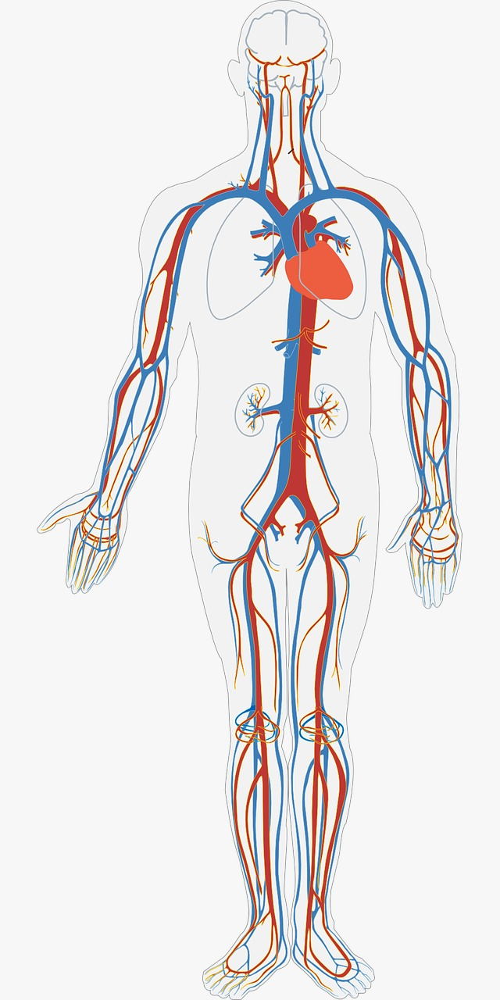
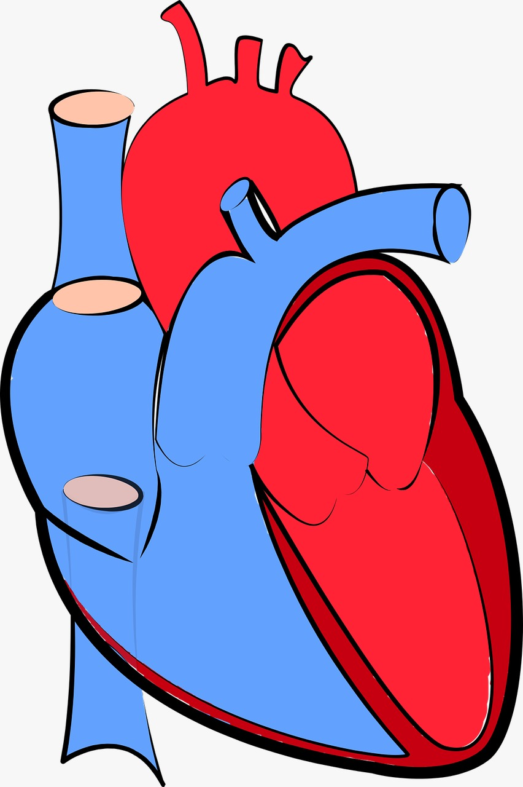

La cardiología es la rama de la medicina que se enfoca en el estudio, diagnóstico y tratamiento de enfermedades del corazón y del sistema circulatorio.
Los cardiólogos son médicos que han completado la educación médica básica y luego han seguido una formación adicional en cardiología. Esta formación incluye una residencia en medicina interna seguida de una subespecialización en cardiología, durante la cual adquieren experiencia en el diagnóstico y tratamiento de enfermedades cardiovasculares.
La cardiología abarca una amplia gama de condiciones y enfermedades relacionadas con el corazón y los vasos sanguíneos. Esto incluye enfermedades como la enfermedad coronaria, la insuficiencia cardíaca, las arritmias cardíacas, las valvulopatías, las cardiopatías congénitas, entre otras.
Los cardiólogos utilizan una variedad de métodos para diagnosticar enfermedades cardiovasculares, que pueden incluir pruebas no invasivas como electrocardiogramas (ECG), ecocardiografías, pruebas de esfuerzo, pruebas de imagen como la resonancia magnética cardíaca y la tomografía computarizada cardíaca, así como pruebas invasivas como cateterismo cardíaco.
El tratamiento en cardiología puede incluir cambios en el estilo de vida como dieta y ejercicio, medicamentos para controlar la presión arterial, reducir el colesterol, controlar el ritmo cardíaco o prevenir la formación de coágulos sanguíneos, procedimientos no quirúrgicos como la colocación de stents para abrir arterias bloqueadas, y procedimientos quirúrgicos como la cirugía de bypass coronario o la reparación de válvulas cardíacas.
Los cardiólogos también desempeñan un papel importante en la prevención de enfermedades cardiovasculares. Esto incluye la educación sobre factores de riesgo como la hipertensión arterial, el colesterol alto, la diabetes, el tabaquismo y la obesidad, y la promoción de estilos de vida saludables para reducir estos riesgos y prevenir la aparición de enfermedades cardiovasculares.